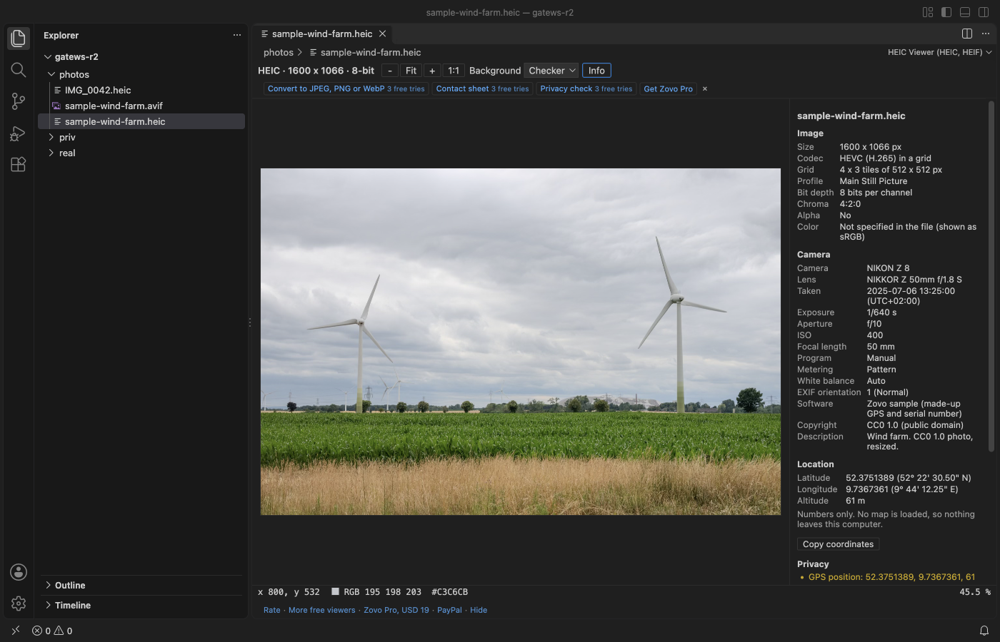

Open files in VS Code and Cursor / 3D and imaging
Open an iPhone HEIC photo in VS Code
VS Code has no HEIC decoder, so an iPhone photo opens as a binary file. HEIC Viewer & AVIF Viewer opens .heic, .heif, .hif and .avif files in a tab with zoom and pan, the image size, codec and bit depth, the camera, lens and exposure from the EXIF, and the GPS position as plain numbers. It decodes the photo on your computer, with no account and no network calls. All of that is free. Zovo Pro (USD 19 once) adds conversion to JPEG, PNG or WebP, a contact sheet of a folder, and a privacy check that removes GPS positions and serial numbers, with 3 free tries each.
Free, MIT license. Extension ID zovo.zovo-heic-viewer, version 0.1.0. Needs VS Code 1.75.0 or newer.

Steps in VS Code
- Install HEIC Viewer & AVIF Viewer from the Marketplace, or press Ctrl+P (Cmd+P on macOS) and run
ext install zovo.zovo-heic-viewer. - Click a
.heic,.heifor.hiffile in the Explorer. The photo opens in a tab, with the info panel next to it. - For an
.aviffile, right-click it and choose Open in HEIC Viewer, because VS Code opens AVIF in its own image preview by default. Reopen Editor With makes the viewer the default. - Zoom with Ctrl or Cmd and the mouse wheel, the + and - buttons, or the keys
+,-,0(fit) and1(actual size). Drag to pan. - Press
Ito show or hide the info panel. In a burst or another file with several images, the left and right arrows step through them. - Use Copy coordinates to copy the GPS position. No map is loaded.
Where Zovo Pro saves time
Opening HEIC, HEIF and AVIF photos, zoom and pan, the info panel with camera data and every EXIF tag, and the GPS position as numbers are free, with no account and no network calls. There is no trial timer and no license banner.
Before you share a folder of phone photos, Privacy Check lists every photo that holds a GPS position, a camera or lens serial number or an owner name. One step removes them, in place after you confirm or as cleaned copies next to the originals, and the image data is not touched. The other two Pro tools are Convert to JPEG, PNG or WebP, for one photo or a whole folder, with quality, size and a choice to keep or remove the metadata, and Contact Sheet, which puts every photo of a folder on A4 pages with file names and dates, saved as a PDF or PNG pages.
With Privacy Check (Zovo Pro)
- Run "HEIC Viewer: Privacy Check: GPS and Serial Numbers (Pro)" from the Command Palette, or right-click a folder or a photo in the Explorer and pick "Zovo Pro: Privacy check".
- Read the list of photos and what each one holds.
- Choose to remove the data in place or to write cleaned copies. Removing in place asks you to confirm first.
Privacy Check works 3 times on your computer before it asks for a license, and a try counts only when you get a result. Opening a file shows no popup and no countdown.
Zovo Pro costs USD 19 once. It is not a subscription, and it turns on the Pro tools in every Zovo extension, not only HEIC Viewer & AVIF Viewer. After a card payment (Stripe) your license key shows on the next page. In VS Code, run "Zovo Pro: Enter Zovo Pro license key" from the Command Palette and paste it. The key is checked on your computer, with no network call. With GitHub Sponsors, pick the "$19 one time" tier, then run "Zovo Pro: I already paid: unlock with GitHub Sponsors" and sign in with the same GitHub account. With PayPal, send USD 19 with "Zovo Pro" in the note and the key comes by email within a day.
A team of 5: USD 59 once, by card or by PayPal. Every rule and every Pro tool is on the Zovo Pro page.
Steps in Cursor, Windsurf or VSCodium
- Open the Extensions view with Ctrl+Shift+X (Cmd+Shift+X on macOS).
- Search for
zovo.zovo-heic-viewerand click Install. Cursor, Windsurf and VSCodium install from Open VSX, where it is published aszovo/zovo-heic-viewer. - If your editor has no gallery, download the .vsix from the Open VSX page and run "Extensions: Install from VSIX...".
- Then use it the same way as in VS Code.
What HEIC Viewer & AVIF Viewer handles
- HEIC, HEIF and HIF photos with HEVC (H.265) from iPhones, Android phones and cameras, including 10-bit files (shown at 8 bits) and photos stored as a grid of tiles.
- AVIF images from 8 to 12-bit, with alpha and grids. An animated AVIF shows its first frame.
- Bursts, stereo pairs and other files with several images, with an Image picker.
- Rotation, mirroring and crop applied the way the file says, and Display P3 colors kept.
What it does not do
- HEIF files that use VVC (H.266), JPEG 2000 or other codecs show their details with a note that the pixels are not decoded in this version.
- HDR photos are shown in 8 bits without tone mapping, so bright areas look flat.
- Files over 300 MB open with a message instead of the image (setting
heicViewer.maxFileSizeMB). - The GPS position is shown as numbers only. No map is drawn.
Other options
- HEIC Image Preview (
nuriyev.heic-preview, 4,450 installs, on Open VSX). Its own description: "Preview HEIC images directly in VSCode". - HEIC Image Viewer (
Vingertop.heic-viewer, 200 installs, not on Open VSX). Its own description: "View HEIC/HEIF images directly in VS Code." - Preview on macOS, or the Photos app on Windows. Both open HEIC photos outside the editor. On Windows the Photos app may first need the HEIF and HEVC extensions from the Microsoft Store.


Install counts and Open VSX status were checked on 12 November 2026. Descriptions in quotes are the extensions' own.
Questions
Why does VS Code not open .heic files?
VS Code previews PNG, JPEG, GIF, WebP and a few other formats, but it has no HEIC decoder, so a .heic file opens as binary. You need an extension that decodes HEIC.
Does the photo or its GPS position leave my computer?
No. The viewer reads the file you open and makes no network calls. The GPS position is shown as numbers and no map or tile server is contacted.
Can I convert HEIC to JPEG in VS Code?
Yes, with the Pro tool Convert to JPEG, PNG or WebP, for one photo or a whole folder. It has 3 free tries before you need Zovo Pro.
Does it work in Cursor or Windsurf?
Yes. Cursor, Windsurf and VSCodium install extensions from Open VSX. Search for the extension in their Extensions view and install it there.
More about HEIC Viewer & AVIF Viewer
Read the HEIC Viewer & AVIF Viewer page for every feature and setting, or the source code on GitHub.
Related guides
- View STL files in VS Code
- Open DICOM and NIfTI files in VS Code
- Calculate the volume of an STL file
- DICOM to NIfTI in VS Code
Zovo Pro and support
Zovo Pro: USD 19 once, every Zovo viewer. It turns on the Pro tools in this extension and in the other Zovo extensions you use. The free features stay free.
After a card payment your license key shows on the next page. Paste it with the command "Zovo Pro: Enter a key".
You can also support the work with no Pro:
Need your format supported?
Open a format request with a sample file, and I reply there whether it can be done. For USD 299 once, through this GitHub Sponsors tier, I add your file format or a missing feature to this extension, with tests, within 7 days.